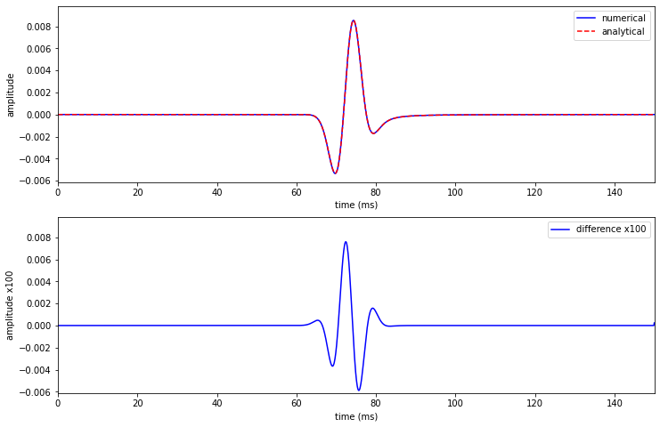
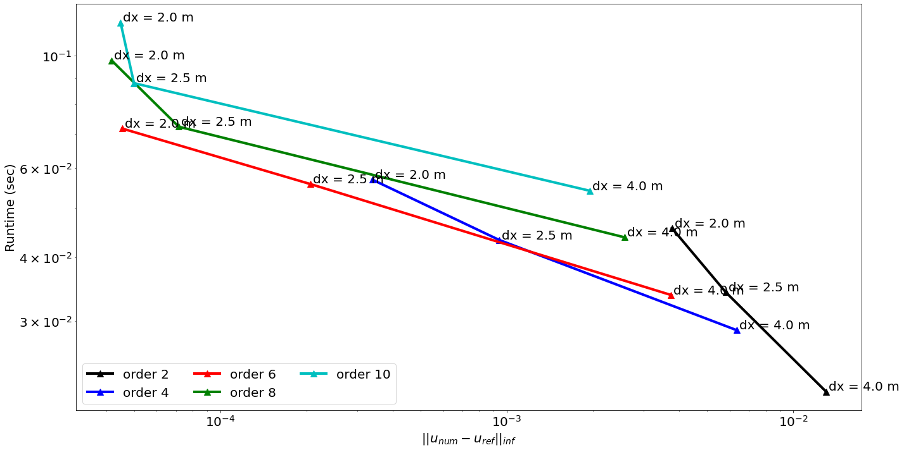
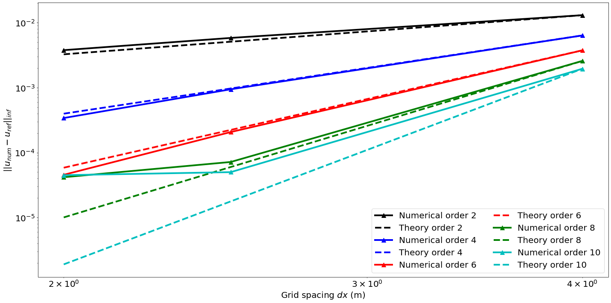

import numpy as np
from scipy.special import hankel2
from examples.seismic.acoustic import AcousticWaveSolver
from examples.seismic import Model, RickerSource, Receiver, TimeAxis, AcquisitionGeometry
from devito import set_log_level
from benchmarks.user.tools.plotter import LinePlotter
import matplotlib.pyplot as plt
from matplotlib import cm
%matplotlib inline
# Switch to error logging so that info is printed but runtime is hidden
from devito import configuration
configuration['log-level'] = 'ERROR'
# Model with fixed time step value
class ModelBench(Model):
"""
Physical model used for accuracy benchmarking.
The critical dt is made small enough to ignore
time discretization errors
"""
@property
def critical_dt(self):
"""Critical computational time step value."""
return .1
Verification
We compute the error between the numerical and reference solutions for varying spatial discretization order and grid spacing. We also compare the time to solution to the error for these parameters.
# Discretization order
orders = (2, 4, 6, 8, 10)
norder = len(orders)
# Number of time steps
nt = 1501
# Time axis
dt = 0.1
t0 = 0.
tn = dt * (nt-1)
time = np.linspace(t0, tn, nt)
print("t0, tn, dt, nt; %.4f %.4f %.4f %d" % (t0, tn, dt, nt))
# Source peak frequency in KHz
f0 = .09
t0, tn, dt, nt; 0.0000 150.0000 0.1000 1501
# Domain sizes and gird spacing
shapes = ((201, 2.0), (161, 2.5), (101, 4.0))
dx = [2.0, 2.5, 4.0]
nshapes = len(shapes)
# Fine grid model
c0 = 1.5
model = ModelBench(vp=c0, origin=(0., 0.), spacing=(.5, .5), bcs="damp",
shape=(801, 801), space_order=20, nbl=40, dtype=np.float32)
# Source and receiver geometries
src_coordinates = np.empty((1, 2))
src_coordinates[0, :] = 200.
# Single receiver offset 100 m from source
rec_coordinates = np.empty((1, 2))
rec_coordinates[:, :] = 260.
print("The computational Grid has (%s, %s) grid points "
"and a physical extent of (%sm, %sm)" % (*model.grid.shape, *model.grid.extent))
print("Source is at the center with coordinates (%sm, %sm)" % tuple(src_coordinates[0]))
print("Receiver (single receiver) is located at (%sm, %sm) " % tuple(rec_coordinates[0]))
# Note: gets time sampling from model.critical_dt
geometry = AcquisitionGeometry(model, rec_coordinates, src_coordinates,
t0=t0, tn=tn, src_type='Ricker', f0=f0, t0w=1.5/f0)
The computational Grid has (881, 881) grid points and a physical extent of (440.0m, 440.0m)
Source is at the center with coordinates (200.0m, 200.0m)
Receiver (single receiver) is located at (260.0m, 260.0m)
Reference solution for numerical convergence
solver = AcousticWaveSolver(model, geometry, kernel='OT2', space_order=8)
ref_rec, ref_u, _ = solver.forward()
Analytical solution for comparison with the reference numerical solution
The analytical solution of the 2D acoustic wave-equation with a source pulse is defined as:
where H_0^{(2)} is the Hankel function of the second kind, F(\omega) is the Fourier spectrum of the source time function at angular frequencies \omega and k = \frac{\omega}{v} is the wavenumber.
We look at the analytical and numerical solution at a single grid point. We ensure that this grid point is on-the-grid for all discretizations analyised in the further verification.
# Source and receiver coordinates
sx, sz = src_coordinates[0, :]
rx, rz = rec_coordinates[0, :]
# Define a Ricker wavelet shifted to zero lag for the Fourier transform
def ricker(f, T, dt, t0):
t = np.linspace(-t0, T-t0, int(T/dt))
tt = (np.pi**2) * (f**2) * (t**2)
y = (1.0 - 2.0 * tt) * np.exp(- tt)
return y
def analytical(nt, model, time, **kwargs):
dt = kwargs.get('dt', model.critical_dt)
# Fourier constants
nf = int(nt/2 + 1)
fnyq = 1. / (2 * dt)
df = 1.0 / time[-1]
faxis = df * np.arange(nf)
wavelet = ricker(f0, time[-1], dt, 1.5/f0)
# Take the Fourier transform of the source time-function
R = np.fft.fft(wavelet)
R = R[0:nf]
nf = len(R)
# Compute the Hankel function and multiply by the source spectrum
U_a = np.zeros((nf), dtype=complex)
for a in range(1, nf-1):
k = 2 * np.pi * faxis[a] / c0
tmp = k * np.sqrt(((rx - sx))**2 + ((rz - sz))**2)
U_a[a] = -1j * np.pi * hankel2(0.0, tmp) * R[a]
# Do inverse fft on 0:dt:T and you have analytical solution
U_t = 1.0/(2.0 * np.pi) * np.real(np.fft.ifft(U_a[:], nt))
# The analytic solution needs be scaled by dx^2 to convert to pressure
return np.real(U_t) * (model.spacing[0]**2)
time1 = np.linspace(0.0, 3000., 30001)
U_t = analytical(30001, model, time1, dt=time1[1] - time1[0])
U_t = U_t[0:1501]
#NBVAL_IGNORE_OUTPUT
print("Numerical data min,max,abs; %+.6e %+.6e %+.6e" %
(np.min(ref_rec.data), np.max(ref_rec.data), np.max(np.abs(ref_rec.data)) ))
print("Analytic data min,max,abs; %+.6e %+.6e %+.6e" %
(np.min(U_t), np.max(U_t), (np.max(np.abs(U_t)))))
Numerical data min,max,abs; -5.349830e-03 +8.529913e-03 +8.529913e-03
Analytic data min,max,abs; -5.322232e-03 +8.543911e-03 +8.543911e-03
# Plot wavefield and source/rec position
plt.figure(figsize=(8,8))
amax = np.max(np.abs(ref_u.data[1,:,:]))
plt.imshow(ref_u.data[1,:,:], vmin=-1.0 * amax, vmax=+1.0 * amax, cmap="seismic")
plt.plot(2*sx+40, 2*sz+40, 'r*', markersize=11, label='source') # plot position of the source in model, add nbl for correct position
plt.plot(2*rx+40, 2*rz+40, 'k^', markersize=8, label='receiver') # plot position of the receiver in model, add nbl for correct position
plt.legend()
plt.xlabel('x position (m)')
plt.ylabel('z position (m)')
plt.savefig('wavefieldperf.pdf')
# Plot trace
plt.figure(figsize=(12,8))
plt.subplot(2,1,1)
plt.plot(time, ref_rec.data[:, 0], '-b', label='numerical')
plt.plot(time, U_t[:], '--r', label='analytical')
plt.xlim([0,150])
plt.ylim([1.15*np.min(U_t[:]), 1.15*np.max(U_t[:])])
plt.xlabel('time (ms)')
plt.ylabel('amplitude')
plt.legend()
plt.subplot(2,1,2)
plt.plot(time, 100 *(ref_rec.data[:, 0] - U_t[:]), '-b', label='difference x100')
plt.xlim([0,150])
plt.ylim([1.15*np.min(U_t[:]), 1.15*np.max(U_t[:])])
plt.xlabel('time (ms)')
plt.ylabel('amplitude x100')
plt.legend()
plt.savefig('ref.pdf')
plt.show()

#NBVAL_IGNORE_OUTPUT
error_time = np.zeros(5)
error_time[0] = np.linalg.norm(U_t[:-1] - ref_rec.data[:-1, 0], 2) / np.sqrt(nt)
errors_plot = [(time, U_t[:-1] - ref_rec.data[:-1, 0])]
print(error_time[0])
1.1274823771092997e-05
Convergence in time
We first show the convergence of the time discretization for a fix high-order spatial discretization (20th order).
After we show that the time discretization converges in O(dt^2) and therefore only contains the error in time, we will take the numerical solution for dt=.1ms as a reference for the spatial discretization analysis.
#NBVAL_IGNORE_OUTPUT
dt = [0.1000, 0.0800, 0.0750, 0.0625, 0.0500]
nnt = (np.divide(150.0, dt) + 1).astype(int)
for i in range(1, 5):
# Time axis
t0 = 0.0
tn = 150.0
time = np.linspace(t0, tn, nnt[i])
# Source geometry
src_coordinates = np.empty((1, 2))
src_coordinates[0, :] = 200.
# Single receiver offset 100 m from source
rec_coordinates = np.empty((1, 2))
rec_coordinates[:, :] = 260.
geometry = AcquisitionGeometry(model, rec_coordinates, src_coordinates,
t0=t0, tn=tn, src_type='Ricker', f0=f0, t0w=1.5/f0)
# Note: incorrect data size will be generated here due to AcquisitionGeometry bug ...
# temporarily fixed below by resizing the output from the solver
geometry.resample(dt[i])
print("geometry.time_axes; ", geometry.time_axis)
solver = AcousticWaveSolver(model, geometry, time_order=2, space_order=8)
ref_rec1, ref_u1, _ = solver.forward(dt=dt[i])
ref_rec1_data = ref_rec1.data[0:nnt[i],:]
time1 = np.linspace(0.0, 3000., 20*(nnt[i]-1) + 1)
U_t1 = analytical(20*(nnt[i]-1) + 1, model, time1, dt=time1[1] - time1[0])
U_t1 = U_t1[0:nnt[i]]
error_time[i] = np.linalg.norm(U_t1[:-1] - ref_rec1_data[:-1, 0], 2) / np.sqrt(nnt[i]-1)
ratio_d = dt[i-1]/dt[i] if i > 0 else 1.0
ratio_e = error_time[i-1]/error_time[i] if i > 0 else 1.0
print("error for dt=%.4f is %12.6e -- ratio dt^2,ratio err; %12.6f %12.6f \n" %
(dt[i], error_time[i], ratio_d**2, ratio_e))
errors_plot.append((geometry.time_axis.time_values, U_t1[:-1] - ref_rec1_data[:-1, 0]))
geometry.time_axes; TimeAxis: start=0, stop=150.08, step=0.08, num=1877
error for dt=0.0800 is 7.403730e-06 -- ratio dt^2,ratio err; 1.562500 1.522857
geometry.time_axes; TimeAxis: start=0, stop=150, step=0.075, num=2001
error for dt=0.0750 is 6.557951e-06 -- ratio dt^2,ratio err; 1.137778 1.128970
geometry.time_axes; TimeAxis: start=0, stop=150, step=0.0625, num=2401
error for dt=0.0625 is 4.647428e-06 -- ratio dt^2,ratio err; 1.440000 1.411093
geometry.time_axes; TimeAxis: start=0, stop=150, step=0.05, num=3001
error for dt=0.0500 is 3.026210e-06 -- ratio dt^2,ratio err; 1.562500 1.535726
plt.figure(figsize=(20, 10))
theory = [t**2 for t in dt]
theory = [error_time[0]*th/theory[0] for th in theory]
plt.loglog([t for t in dt], error_time, '-ob', label=('Numerical'), linewidth=4, markersize=10)
plt.loglog([t for t in dt], theory, '-^r', label=('Theory (2nd order)'), linewidth=4, markersize=10)
for x, y, a in zip([t for t in dt], theory, [('dt = %s ms' % (t)) for t in dt]):
plt.annotate(a, xy=(x, y), xytext=(4, 2),
textcoords='offset points', size=20,
horizontalalignment='left', verticalalignment='top')
plt.xlabel("Time-step $dt$ (ms)", fontsize=20)
plt.ylabel("$|| u_{num} - u_{ana}||_2$", fontsize=20)
plt.tick_params(axis='both', which='both', labelsize=20)
plt.tight_layout()
plt.xlim((0.05, 0.1))
plt.legend(fontsize=20, ncol=4, fancybox=True, loc='best')
plt.savefig("TimeConvergence.pdf", format='pdf', facecolor='white',
orientation='landscape', bbox_inches='tight')
plt.show()
#NBVAL_IGNORE_OUTPUT
stylel = ('--y', '--b', '--r', '--g', '--c')
start_t = lambda dt: int(50/dt)
end_t = lambda dt: int(100/dt)
plt.figure(figsize=(20, 10))
for i, dti in enumerate(dt):
timei, erri = errors_plot[i]
s, e = start_t(dti), end_t(dti)
if i == 0:
plt.plot(timei[s:e], U_t[s:e], 'k', label='analytical', linewidth=2)
plt.plot(timei[s:e], 100*erri[s:e], stylel[i], label="100 x error dt=%sms"%dti, linewidth=2)
plt.xlim([50,100])
plt.xlabel("Time (ms)", fontsize=20)
plt.legend(fontsize=20)
plt.show()
#NBVAL_IGNORE_OUTPUT
pf = np.polyfit(np.log([t for t in dt]), np.log(error_time), deg=1)
print("Convergence rate in time is: %.4f" % pf[0])
assert np.isclose(pf[0], 1.9, atol=0, rtol=.1)
Convergence rate in time is: 1.8966
Convergence in space
We have a correct reference solution we can use for space discretization analysis
#NBVAL_IGNORE_OUTPUT
errorl2 = np.zeros((norder, nshapes))
timing = np.zeros((norder, nshapes))
set_log_level("ERROR")
ind_o = -1
for spc in orders:
ind_o +=1
ind_spc = -1
for nn, h in shapes:
ind_spc += 1
time = np.linspace(0., 150., nt)
model_space = ModelBench(vp=c0, origin=(0., 0.), spacing=(h, h), bcs="damp",
shape=(nn, nn), space_order=spc, nbl=40, dtype=np.float32)
# Source geometry
src_coordinates = np.empty((1, 2))
src_coordinates[0, :] = 200.
# Single receiver offset 100 m from source
rec_coordinates = np.empty((1, 2))
rec_coordinates[:, :] = 260.
geometry = AcquisitionGeometry(model_space, rec_coordinates, src_coordinates,
t0=t0, tn=tn, src_type='Ricker', f0=f0, t0w=1.5/f0)
solver = AcousticWaveSolver(model_space, geometry, time_order=2, space_order=spc)
loc_rec, loc_u, summary = solver.forward()
# Note: we need to correct for fixed spacing pressure corrections in both analytic
# (run at the old model spacing) and numerical (run at the new model spacing) solutions
c_ana = 1 / model.spacing[0]**2
c_num = 1 / model_space.spacing[0]**2
# Compare to reference solution
# Note: we need to normalize by the factor of grid spacing squared
errorl2[ind_o, ind_spc] = np.linalg.norm(loc_rec.data[:-1, 0] * c_num - U_t[:-1] * c_ana, 2) / np.sqrt(U_t.shape[0] - 1)
timing[ind_o, ind_spc] = np.max([v for _, v in summary.timings.items()])
print("starting space order %s with (%s, %s) grid points the error is %s for %s seconds runtime" %
(spc, nn, nn, errorl2[ind_o, ind_spc], timing[ind_o, ind_spc]))
starting space order 2 with (201, 201) grid points the error is 0.00376890390735257 for 0.11462100000000232 seconds runtime
starting space order 2 with (161, 161) grid points the error is 0.005813084671822352 for 0.21845700000000504 seconds runtime
starting space order 2 with (101, 101) grid points the error is 0.013011803756815122 for 0.032794999999999366 seconds runtime
starting space order 4 with (201, 201) grid points the error is 0.0003403506132631831 for 0.0771300000000017 seconds runtime
starting space order 4 with (161, 161) grid points the error is 0.0009417872279623022 for 0.07411399999999989 seconds runtime
starting space order 4 with (101, 101) grid points the error is 0.006347337804825049 for 0.041079000000000594 seconds runtime
starting space order 6 with (201, 201) grid points the error is 4.502665029531472e-05 for 0.08156900000000102 seconds runtime
starting space order 6 with (161, 161) grid points the error is 0.00020691319261459238 for 0.07217499999999948 seconds runtime
starting space order 6 with (101, 101) grid points the error is 0.0037431036246854867 for 0.04163999999999989 seconds runtime
starting space order 8 with (201, 201) grid points the error is 4.1027806557032715e-05 for 0.10310699999999935 seconds runtime
starting space order 8 with (161, 161) grid points the error is 7.128947664631205e-05 for 0.27055700000000116 seconds runtime
starting space order 8 with (101, 101) grid points the error is 0.002573508922203025 for 0.04638000000000103 seconds runtime
starting space order 10 with (201, 201) grid points the error is 4.4153663464842855e-05 for 0.1793579999999967 seconds runtime
starting space order 10 with (161, 161) grid points the error is 4.9407728678141816e-05 for 0.21400200000000336 seconds runtime
starting space order 10 with (101, 101) grid points the error is 0.0019485859969163928 for 0.08266899999999956 seconds runtime
stylel = ('-^k', '-^b', '-^r', '-^g', '-^c')
plt.figure(figsize=(20, 10))
for i in range(0, 5):
plt.loglog(errorl2[i, :], timing[i, :], stylel[i], label=('order %s' % orders[i]), linewidth=4, markersize=10)
for x, y, a in zip(errorl2[i, :], timing[i, :], [('dx = %s m' % (sc)) for sc in dx]):
plt.annotate(a, xy=(x, y), xytext=(4, 2),
textcoords='offset points', size=20)
plt.xlabel("$|| u_{num} - u_{ref}||_{inf}$", fontsize=20)
plt.ylabel("Runtime (sec)", fontsize=20)
plt.tick_params(axis='both', which='both', labelsize=20)
plt.tight_layout()
plt.legend(fontsize=20, ncol=3, fancybox=True, loc='lower left')
plt.savefig("TimeAccuracy.pdf", format='pdf', facecolor='white',
orientation='landscape', bbox_inches='tight')
plt.show()

stylel = ('-^k', '-^b', '-^r', '-^g', '-^c')
style2 = ('--k', '--b', '--r', '--g', '--c')
plt.figure(figsize=(20, 10))
for i in range(0, 5):
theory = [k**(orders[i]) for k in dx]
theory = [errorl2[i, 2]*th/theory[2] for th in theory]
plt.loglog([sc for sc in dx], errorl2[i, :], stylel[i], label=('Numerical order %s' % orders[i]),
linewidth=4, markersize=10)
plt.loglog([sc for sc in dx], theory, style2[i], label=('Theory order %s' % orders[i]),
linewidth=4, markersize=10)
plt.xlabel("Grid spacing $dx$ (m)", fontsize=20)
plt.ylabel("$||u_{num} - u_{ref}||_{inf}$", fontsize=20)
plt.tick_params(axis='both', which='both', labelsize=20)
plt.tight_layout()
plt.legend(fontsize=20, ncol=2, fancybox=True, loc='lower right')
# plt.xlim((2.0, 4.0))
plt.savefig("Convergence.pdf", format='pdf', facecolor='white',
orientation='landscape', bbox_inches='tight')
plt.show()

#NBVAL_IGNORE_OUTPUT
for i in range(5):
pf = np.polyfit(np.log([sc for sc in dx]), np.log(errorl2[i, :]), deg=1)[0]
if i==3:
pf = np.polyfit(np.log([sc for sc in dx][1:]), np.log(errorl2[i, 1:]), deg=1)[0]
print("Convergence rate for order %s is %s" % (orders[i], pf))
if i<4:
assert np.isclose(pf, orders[i], atol=0, rtol=.2)
Convergence rate for order 2 is 1.7762872863258858
Convergence rate for order 4 is 4.196113606027213
Convergence rate for order 6 is 6.343794127096714
Convergence rate for order 8 is 7.630317382624955
Convergence rate for order 10 is 5.827482875857245